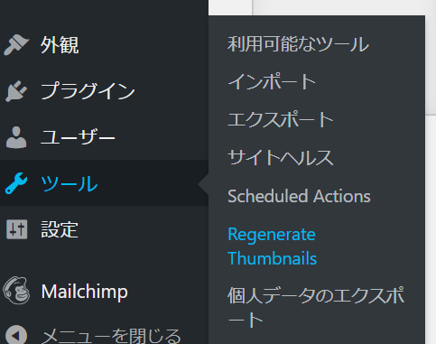

WordPressのDB設定 | wp-config.php
ルートパスの直下にある「wp-config.php」がDB設定ファイルになっている。※wp-config.phpの内容を抜粋
// ** MySQL 設定 - この情報はホスティング先から入手してください。 ** //
/** WordPress のためのデータベース名 */
define( 'DB_NAME', 'hello_wordpress' );
/** MySQL データベースのユーザー名 */
define( 'DB_USER', 'root' );
/** MySQL データベースのパスワード */
define( 'DB_PASSWORD', 'xxxx' );
/** MySQL のホスト名 */
define( 'DB_HOST', 'localhost' );
/** データベースのテーブルを作成する際のデータベースの文字セット */
define( 'DB_CHARSET', 'utf8mb4' );
/** データベースの照合順序 (ほとんどの場合変更する必要はありません) */
define('DB_COLLATE', '');
画像からサムネイルを一括で作成する | Regenerate Thumbnailsプラグイン
- 画像からサムネイルを一括で作成する | Regenerate Thumbnailsプラグイン
- プロジェクトホーム\wp-content\uploads\2019\10」にオリジナルサイズの画像ファイルを配置する
-
wp_postsに画像ファイルのデータを登録する。(DBを直接編集)
例 「haze.jpgをプロジェクトホーム\wp-content\uploads\2019\10」に配置した場合ID post_author post_date post_date_gmt post_content post_title post_excerpt post_status comment_status ping_status post_password post_name to_ping pinged post_modified post_modified_gmt post_content_filtered post_parent guid menu_order post_type post_mime_type comment_count 8297 1 2019/10/21 0:00 2019/10/21 0:00 テストデータの画像です。 haze ハゼ inherit open closed haze 2019/10/21 0:00 2019/10/21 0:00 test2 14 0 attachment image/jpeg 0 -
wp_postmetaにデータを登録する。(DBを直接編集)
例
meta_id post_id meta_key meta_value 72 8297 _wp_attached_file 2019/10/haze.jpg -
Regenerate Thumbnailsのツール画面を開く。
 -
サムネイルの一括作成を実行する。
-
サムネイルが作成される。
WordPressダッシュボードのメディアやギャラリーにも画像が一覧表示されるようになる。